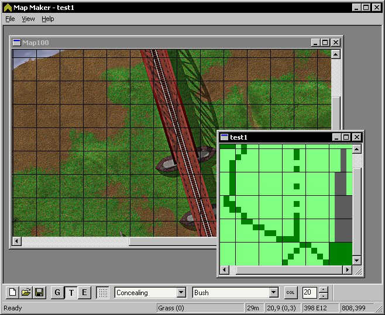

Map Maker - CC2 Map Editor
This is a work in progress map editor for Close Combat 2. Currently it lets you easily edit the data files for the maps and convert graphics to tga files. In the very near future there will a command line tool that will take your TGA graphic and build the three graphic files needed by close combat. Buildings are not supported at this time.
There are still some chunks of the puzzle missing to get a map into cc2.
- The ability to create a los file. In the next couple of weeks.
- The ability to create the final cc2 map graphics. You can hack them with a hex editor and my texture converter. All that needs to change is the header. I will be releasing a command line tool that will do this soon.
- The ability to build maps with buildings. I need to work on the roof file format.
Read the readme.txt that comes with the zip file.
Post feature requests to the Game Stats editing forum (see link on main page)
Download the executable.
The source code is missing the routines that read and write TGA files because of some ownership issues. The code is trivial to implement and requires only changing the Util.cpp file. If somebody makes theh change send it back here and I'll intergrate it.
Notes
- When the program first starts you need to select your CC2 data folder. If you want to use the data of the CD-ROM then point it to E:\data where E: is your CD-ROM drive.
- To open a map, open that map data, not the graphics. For example E:\data\data\maps\map100 would open the Rail Bridge map.
- Left mouse button "paints" with selected tile or elevation.
- Right mouse button lifts the tile and makes it the current tile you "paint" with.
- Tile colors are stored in a file called tilecolor.bin in the current directory (should be the same folder mapmaker.exe is in). If somebody comes up with a good color scheme for tiles send it to me and I'll post it here. To change a tile color select the tile and click the "col" button beside it.
- Hold down space bar to get a hand scroller, very handy for moving around the map quickly.
Screen Shot
